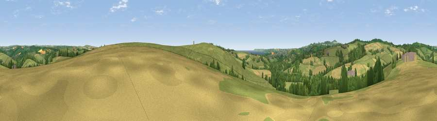

Viewpoint near Golant
#18775 in England · top 37% of its area beats it · near Golant · access?Where it is
The exact computed spot (SX 10125 56425). Click the marker for map links.
Public access: no public right of way or access land is recorded at this exact spot — it may be on private land. Computed from Natural England's CRoW access layer and OpenStreetMap rights of way — not the legal definitive map. Always verify locally.
The view, rendered

A 360° render of this exact spot computed from the terrain model, tree cover and land cover — summer colours, afternoon light, calibrated against photographs of famous viewpoints. Real trees, hedges and buildings will differ in detail.
The panorama
Grey silhouette: terrain skyline in each direction (720 bearings, Earth curvature and refraction included). Dashed green: skyline with trees (+15 m) and buildings (+8 m) as obstacles. Blue strip: how far the ground is visible on each bearing.
Where the view opens
Wedge length = distance to the farthest visible ground on that bearing (vegetation-aware). Rings at 10, 25 and 50 km.
What fills the view
64% grassland · 17% cropland · 16% woodland · 2% built-up ·
Angular shares of the visible panorama (visual magnitude), not map area. Landscape diversity 0.44 (0–1 Shannon).
Key numbers
More beautiful places nearby
The staircase of upgrades: each row has a higher view potential than everything closer. Driving times are estimates from straight-line distance, calibrated against real road routing — check an actual route before setting out.
| Place | Direction | Drive | Score |
|---|---|---|---|
| Viewpoint near Golant | ESE · 1 km | ~2 min | 55.4 |
| Castle Dore Hill | SSE · 1 km | ~3 min | 66.2 |
| Viewpoint near Lanlivery | NW · 2 km | ~5 min | 70.1 |
| Viewpoint near Lanlivery | WNW · 3 km | ~8 min | 71.9 |
| Viewpoint near Lanlivery | NNW · 4 km | ~10 min | 72.0 |
| Viewpoint near Polruan | SSE · 7 km | ~14 min | 73.1 |
| Viewpoint near Polruan | SE · 7 km | ~14 min | 79.4 |
| Viewpoint near Trethurgy | WSW · 7 km | ~15 min | 84.1 |
50.37700, -4.67180 · source: screening · position refined by local search. Computed location — check access rights before visiting.